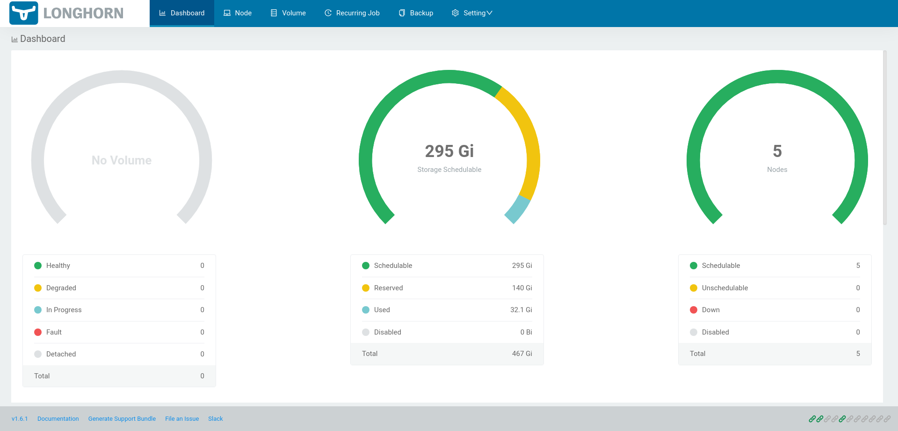

Deploy Longhorn
This guide walks you through deploying Longhorn on a Kubernetes cluster. Longhorn is a distributed block storage system for Kubernetes that is built using containers. It provides features such as snapshots, backups, and volume expansion.
What you’ll need
To complete this guide, you’ll need the following:
A running Kubernetes cluster.
Procedure
Follow the steps below to deploy Longhorn on a Kubernetes cluster:.
Step 1: Install Requirements
Follow the steps below to install the required libraries on each Kubernetes node:
SSH into each Kubernetes node:
user:~/virtlml$ ssh root@<node-ip>
Note
Replace
<node-ip>with the IP address of the node.Install the required libraries:
root@node1:~# apt update && apt install -y sudo jq
Important
Repeat this process for each Kubernetes node.
Step 2: Deploy Longhorn
Follow the steps below to deploy Longhorn on the Kubernetes cluster:
Return to your local environment:
root@node1:~# exit
Apply the Longhorn manifests:
user:~/virtlml$ kubectl apply -k manifests/longhorn/overlays/kubeflow
Note
This command will deploy Longhorn on the Kubernetes cluster. It may take a few minutes for the deployment to complete.
Verify
To verify that Longhorn is running, run the following commands:
Check that the Longhorn pods are running. This may take a few minutes, so don’t worry if some pods are in a failed state initially:
user:~/virtlml$ kubectl get pods -n longhorn-system csi-attacher-5c4bfdcf59-76dpt 1/1 Running 0 6m34s csi-attacher-5c4bfdcf59-zc96c 1/1 Running 0 6m34s csi-attacher-5c4bfdcf59-zpcrd 1/1 Running 0 6m34s csi-provisioner-667796df57-l4bvn 1/1 Running 0 6m34s csi-provisioner-667796df57-tn5mt 1/1 Running 0 6m34s csi-provisioner-667796df57-wr9gz 1/1 Running 0 6m34s csi-resizer-694f8f5f64-krdwn 1/1 Running 0 6m34s csi-resizer-694f8f5f64-q7r64 1/1 Running 0 6m34s csi-resizer-694f8f5f64-st9vb 1/1 Running 0 6m34s csi-snapshotter-959b69d4b-2trb4 1/1 Running 0 6m34s csi-snapshotter-959b69d4b-44bdw 1/1 Running 0 6m34s csi-snapshotter-959b69d4b-nmxxz 1/1 Running 0 6m34s engine-image-ei-5cefaf2b-2cpx5 1/1 Running 0 6m40s engine-image-ei-5cefaf2b-5kkpx 1/1 Running 0 6m40s engine-image-ei-5cefaf2b-6lw22 1/1 Running 0 6m40s engine-image-ei-5cefaf2b-7tj7g 1/1 Running 0 6m40s engine-image-ei-5cefaf2b-bmbxl 1/1 Running 0 6m40s instance-manager-143975653f867415efd89c7528bfdfd9 1/1 Running 0 6m39s instance-manager-931660a4d81395a5ee4a44842096109a 1/1 Running 0 6m40s instance-manager-d7ddfb2f3c3853b122fcc734777e3447 1/1 Running 0 6m39s instance-manager-e3d1d6988014e64b4f12d6d513f72715 1/1 Running 0 6m40s instance-manager-e58918fd8369607e8bff43f3856618be 1/1 Running 0 6m39s longhorn-csi-plugin-8twkq 3/3 Running 0 6m34s longhorn-csi-plugin-cq6pw 3/3 Running 0 6m34s longhorn-csi-plugin-fvf6p 3/3 Running 0 6m34s longhorn-csi-plugin-rwgg9 3/3 Running 0 6m34s longhorn-csi-plugin-xzrlt 3/3 Running 0 6m34s longhorn-driver-deployer-7449f56699-h52tj 1/1 Running 0 6m47s longhorn-iscsi-installation-2jgww 1/1 Running 0 6m47s longhorn-iscsi-installation-6p9f8 1/1 Running 0 6m47s longhorn-iscsi-installation-r8bbc 1/1 Running 0 6m47s longhorn-iscsi-installation-v9pz2 1/1 Running 0 6m47s longhorn-iscsi-installation-vwphj 1/1 Running 0 6m47s longhorn-manager-4k2hl 1/1 Running 0 6m47s longhorn-manager-4zvhw 1/1 Running 0 6m47s longhorn-manager-7p99c 1/1 Running 0 6m47s longhorn-manager-96rnf 1/1 Running 0 6m47s longhorn-manager-rxfr6 1/1 Running 0 6m47s longhorn-nfs-installation-4h9qq 1/1 Running 0 6m47s longhorn-nfs-installation-7d847 1/1 Running 0 6m47s longhorn-nfs-installation-9krbq 1/1 Running 0 6m47s longhorn-nfs-installation-bt4x2 1/1 Running 0 6m47s longhorn-nfs-installation-pggtb 1/1 Running 0 6m47s longhorn-ui-6c8c4fcbb8-2p7ld 1/1 Running 0 6m47s longhorn-ui-6c8c4fcbb8-fhrbh 1/1 Running 0 6m47s
Note
This command will list all the Longhorn pods in the
longhorn-systemnamespace. After a couple of minutes, all the pods should be in theRunningstate.Launch the Longhorn UI:
user:~/virtlml$ kubectl port-forward -n longhorn-system svc/longhorn-frontend 8080:80
Open a web browser and navigate to http://localhost:8080. You should see the Longhorn UI:
